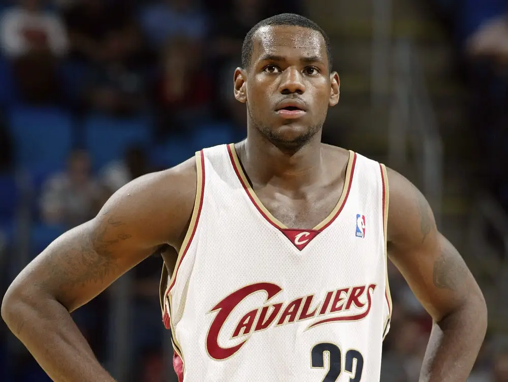
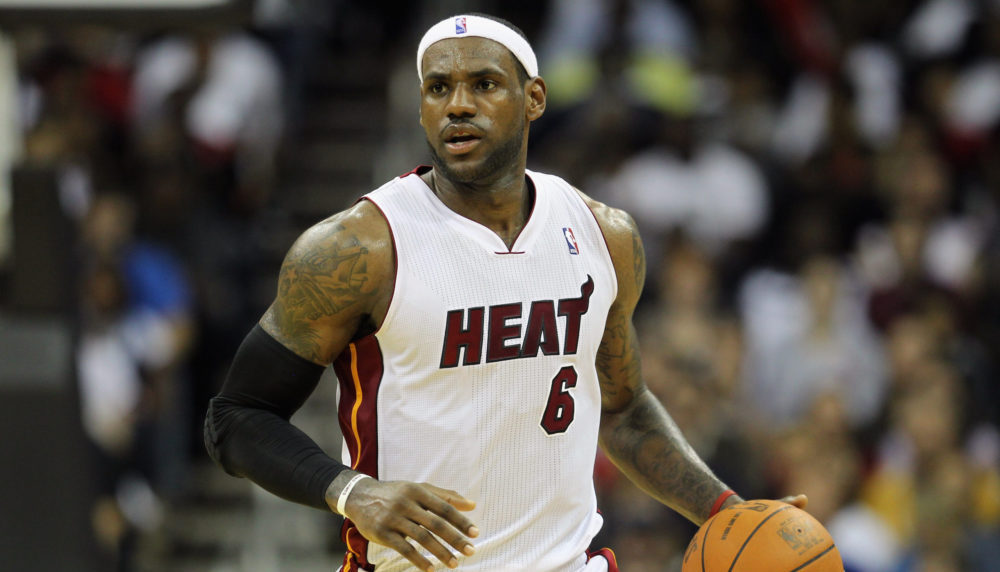
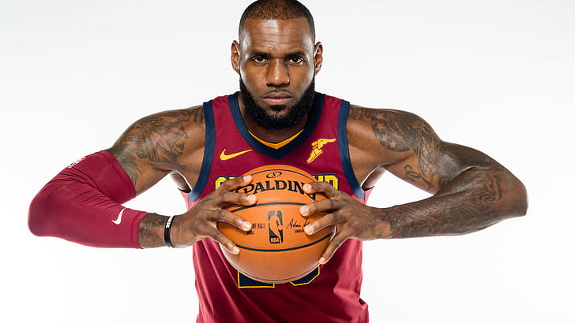
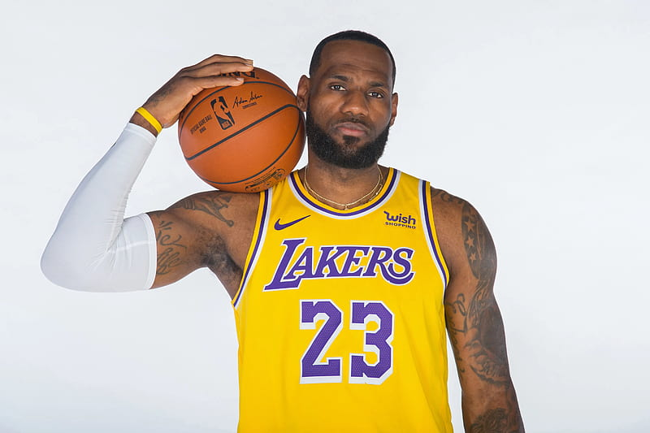

Primera Temporada en la NBA
 Lebron James fue un joven prodigio del baloncesto, nació el 30 de diciembre de 1984 en Akron, Ohio. Desde muy temprana edad, LeBron mostró un talento sobresaliente para el deporte, y rápidamente se convirtió en una leyenda en las canchas de baloncesto locales. Era evidente que su habilidad natural era excepcional y esto captó la atención de los cazatalentos de la NBA.
En 2003 fue seleccionado como la primera elección en el Draft de la NBA por
los Cleveland Cavaliers. LeBron desde su primera temporada en la NBA, descubrió que estaba a la altura de las expectativas y se destacó como uno de los jugadores más emocionantes de la liga. Su combinación de tamaño, velocidad, habilidad para anotar y habilidades de juego lo hizo inigualable en la cancha.
En su segunda temporada, LeBron llevó a los Cavaliers a su primera aparición
en los playoffs desde 1998, sin embargo fueron eliminados en las primeras rondas.
Con cada temporada que pasó, LeBron continuó mejorando y llevando a los Cavaliers a nuevas alturas. En el 2007 los Cavaliers tuvieron aparicion en la Finales de la NBA.
A medida que avanzaba su carrera en Cleveland, LeBron continuó acumulando premios y reconocimientos individuales, incluidos dos premios consecutivos de Jugador Más Valioso (MVP) de la NBA en 2009 y 2010.
Pasos por Miami Heat
La historia de LeBron James en el Miami Heat es un capítulo emocionante y lleno de éxito en su carrera.
Después de anunciar su partida de los Cleveland Cavaliers en 2010, LeBron se unió al Miami Heat en un movimiento audaz y altamente publicitado. Formó un trío estelar conocido como el "Big Three" junto a Dwyane Wade y Chris Bosh.
La llegada de LeBron a Miami terminó una gran expectativa y las esperanzas de los fanáticos estaban por las nubes. El equipo fue instantáneamente considerado uno de los favoritos para ganar el campeonato de la NBA. La combinación de talento, habilidad y liderazgo de LeBron, junto con el apoyo de Wade y Bosh, creó una fuerza formidable en la liga.
En su primera temporada con el Heat en 2010-2011, el equipo mostró su poderío al ganar 58 juegos en la temporada regular y avanzar en los playoffs. Llegaron a las Finales de la NBA, donde se enfrentaron a los Dallas Mavericks.

Sin embargo, en una serie sorprendente, los Mavericks lograron superar al Miami Heat y se llevaron el campeonato en seis juegos.
En la temporada 2011-2012, el Miami Heat volvió más fuerte y determinado. Con LeBron liderando el camino, el equipo tuvo una temporada regular impresionante y avanzó sin problemas en los playoffs. Nuevamente, llegaron a las Finales de la NBA, esta vez enfrentándose a los jóvenes y talentosos Oklahoma City Thunder. El Heat mostró su dominio y ganó el campeonato en cinco juegos, asegurando el primer título de LeBron en su carrera. Además, LeBron fue nombrado el Jugador Más Valioso (MVP) de las Finales, demostrando su impacto y liderazgo en el equipo.
En la temporada 2012-2013, el Miami Heat siguió siendo un equipo imparable. Con LeBron liderando una vez más, lograron una racha impresionante de 27 victorias consecutivas durante la temporada regular. Avanzaron en los playoffs y llegaron nuevamente a las Finales de la NBA. En una revancha contra los San Antonio Spurs, el Heat se enfrentó a un desafío formidable. La serie fue increíblemente reñida y emocionante, y se lesionó hasta el séptimo juego. Finalmente, el Heat salió victorioso y LeBron obtuvo su segundo campeonato consecutivo y el segundo premio de MVP de las Finales.
Después de tres temporadas exitosas en Miami, el Heat no pudo lograr el tricampeonato en la temporada 2013-2014. Fueron derrotados por los San Antonio Spurs en las Finales de la NBA en cinco juegos. A pesar de la derrota, la etapa de LeBron James en el Miami Heat dejó un legado imborrable. Durante su tiempo allí, apareció su capacidad para liderar un equipo de élite, ganó dos campeonatos de la NBA y consolidó aún más su estatus como uno de los mejores jugadores de baloncesto de todos los tiempos.
El hijo vuelve a casa
En 2014, LeBron James volvió a los Cleveland Cavaliers después de pasar cuatro temporadas con el Miami Heat. Su regreso fue recibido con gran entusiasmo por los fanáticos y últimas expectativas para el equipo.
En su primera temporada de regreso, los Cavaliers mejoraron significativamente, logrando un récord de 53 victorias y 29 derrotas. LeBron lideró al equipo hacia los playoffs, pero fueron derrotados en las Finales de la NBA por los Golden State Warriors.
La temporada 2015-2016 fue histórica para los Cavaliers. Liderados por LeBron, el equipo avanzó nuevamente a las Finales de la NBA, enfrentándose a los Golden State Warriors. A pesar de estar abajo 3-1 en la serie, los Cavaliers lograron una increíble remontada y ganaron el campeonato de la NBA, siendo el primer título en la historia de la franquicia.
En la temporada 2016-2017, los Cavaliers tuvieron otra exitosa campaña y regresaron a las Finales de la NBA, pero fueron derrotados por los Golden State Warriors en cinco juegos.
En la temporada 2017-2018, los Cavaliers nuevamente alcanzaron las Finales de la NBA, pero fueron barridos por los Golden State Warriors.
Después de la temporada 2017-2018, LeBron James dejó a los Cavaliers y trabajó con Los Angeles Lakers en la agencia libre.
Con la camiseta de los Lakers
El 1 de julio de 2018, LeBron James, cuatro veces declarado mejor jugador de la NBA hasta entonces, anunció la firma de un contrato con los Angeles Lakers para los siguientes cuatro años.
El 6 de marzo de 2019 superó a Michael Jordan como máximo anotador de la historia colocándose en el cuarto lugar de esta clasificación, en un partido ante los Denver Nuggets, aunque la temporada acabaría sin que Los Lakers consiguieran clasificarse para PlayOffs.
El 25 de enero de 2020, superó a Kobe Bryant en el tercer lugar en la lista de puntajes de todos los tiempos, justo un día antes de la muerte de Bryant en un accidente de helicóptero.
El 16 de febrero de 2020, el Team LeBron derrotó al Team Giannis ganando el All-Star Game 2020. El equipo necesitó marcar 33 puntos en el último cuarto para llegar a los 157 necesarios y superar por dos a su rival. El partido que enfrentó a las estrellas de la NBA se disputó en el United Center de Chicago.
Se convirtió el 28 de octubre en el jugador con más partidos de temporada regular con 20 o más puntos anotados en toda una carrera con 1135, y el 28 de diciembre como el décimo jugador con más partidos disputados de temporada regular en la historia de la NBA.
Récord histórico
LeBron James superó el récord histórico de puntos de Kareem Abdul-Jabbar en la NBA. El 7 de febrero de 2023 la estrella de los Lakers se convirtió en el jugador con la mayor anotación (38.390) en la temporada regular, anotando la canasta frente a los Oklahoma City Thunder, en Los Ángeles.